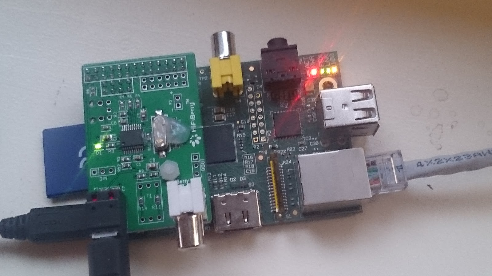
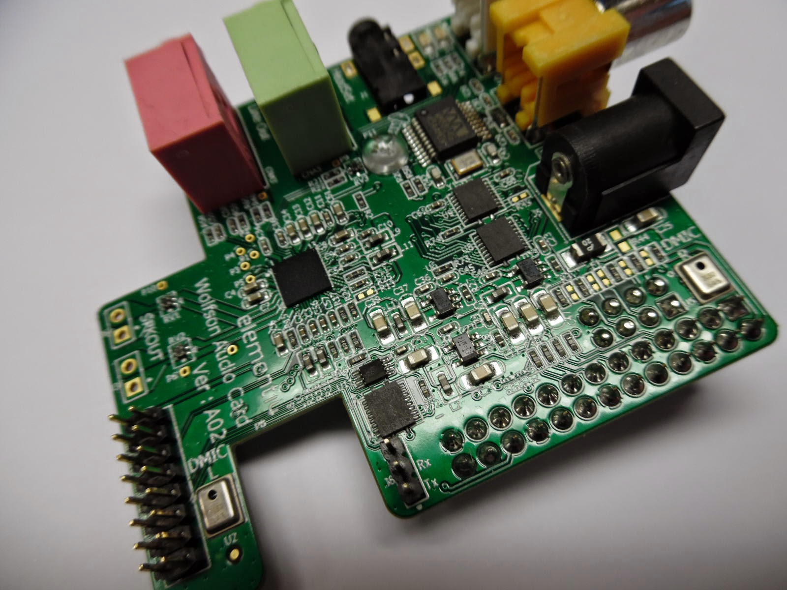
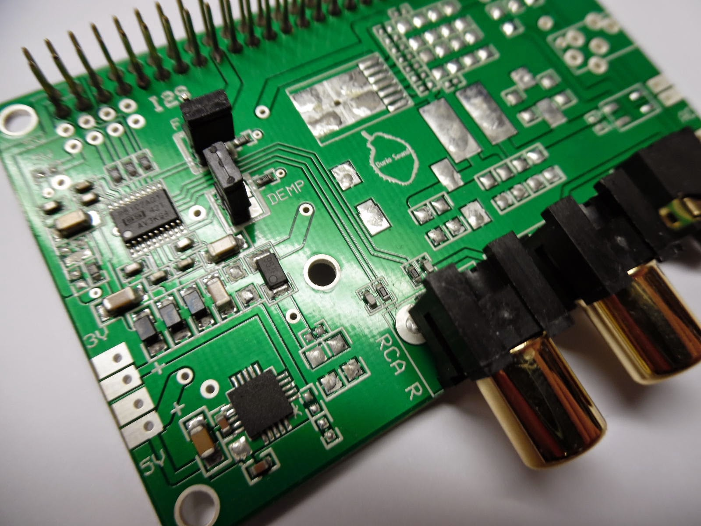
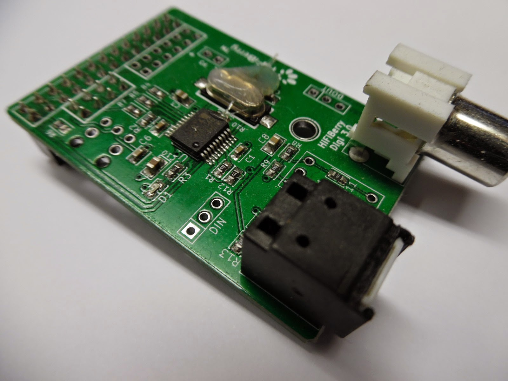
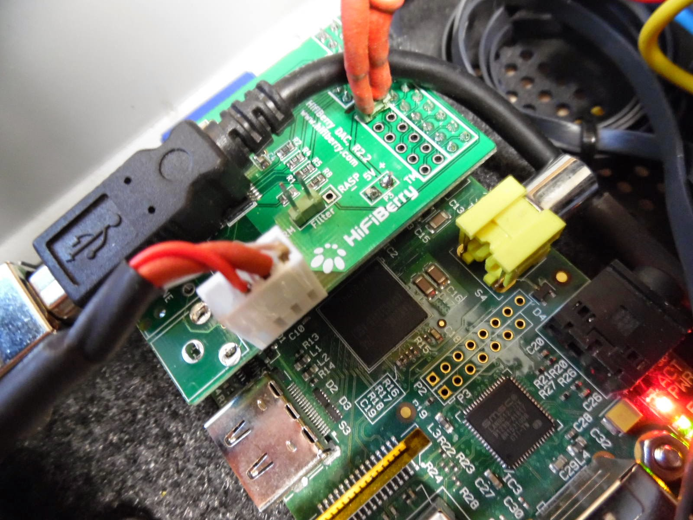
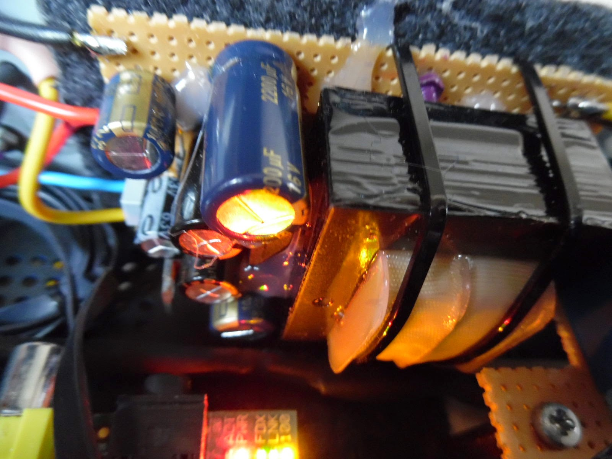
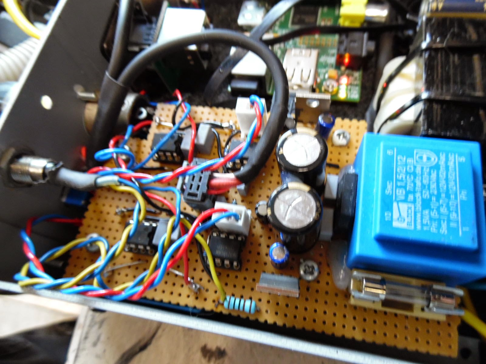
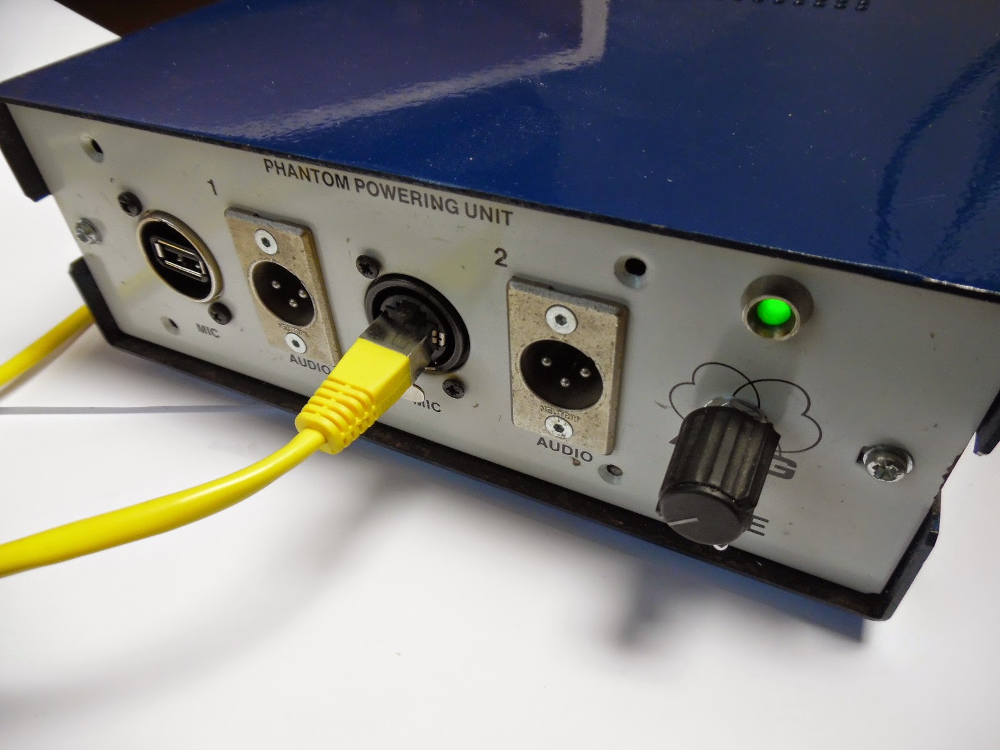

On the bench is a Raspberry Pi with a HifiBerry DAC stacked on top, a USB stick and a tangle of power leads. It is meant to be the reference source for tuning a sound system — but first it has to sound good enough to trust.
As a sound system designer you will, at some point, need a source to test your endeavours. Apart from saying "test one two..." for hours into a torn SM58, one could also use some music. More pleasant for the people around you, and you get the added advantage of having your hands free to twist those knobs. ;)
A reference source
Those sound guys who have been around a bit longer might remember the confusion when CD arrived. Away with the crackle, rattle and buzz of LPs (let alone cassette copies), and hey, what a clear definition. But wait a sec: what is going on in the top end? Still, testing and tuning a system with your favourite CD became worldwide practice.
Fast forward to the 21st century: skipping CDs are obsolete, and a lot of people use an iPad, iPod or iTunes to perform their tunings. Most of them have some doubt about MP3 and advocate WAV (or FLAC for our open-source friends).
We too have used CDs and a "high-end" hi-fi CD player for system tuning. But although we never did a serious investigation, we always had some suspicion about ripped CDs playing from some OS through some USB interface.
Now enter the realm of playing music from your computer. First you notice that it matters a lot which brand of interface you use. In pro-audio the most common solution is some RME interface (pricey). If you investigate that route further, you notice that the player (read: codec) also matters a lot: foobar being one of the more popular, as opposed to anything like "Windows-something-player". On this route you also find out that you have to bypass all OS-based up and down sampling; WASAPI might be a solution in a Windows environment.
I decided to take another route: Linux.
On several instances through this blog you will find pointers. A year ago or so, for example, I started to write a (never finished) walk-through on setting up a headless music player. Now let me try to round it up.
Raspberry Pi running Volumio with balanced outputs


With 5 million of these boards sold, one can presume you have at least heard of the Raspberry Pi. The RPi is based on one of those so-called systems on a chip, running a Linux-based OS. Actually, at first it was marketed as an entry-level platform for children to get to know programming, but these nice toys are becoming very popular with grown-ups. Ah well, toys for boys, I guess. On a zillion places on the internet you can find information and how-tos on operating an RPi. Let us concentrate on running audio.
First of all, the on-board audio chip really sucks, so the first thing to establish is getting your audio data off the board in a proper way. You could use some sort of USB device, maybe even the above-mentioned RME DACs, but I had a lot of trouble running bigger data streams (24-bit/96k) across the combined USB/Ethernet interface. Apparently it is just not up for the task.
A different route only recently opened up by using the I²S protocol on the GPIO ports. Several people have been making nice add-on boards that sit on top of your RPi. Here are three of the boards I tested:






The fourth is a board from HifiBerry that puts out analog. All these boards perform similarly. (No, this is not turning out to be a board shoot-out. ;) For the story we will continue with the latter:


Bit-perfect and a clean clock
As has been mentioned before and over: two things are important in "bit-perfect" reproduction of digital audio. First, no interpolation by up, down or oversampling, and no arithmetic functions like "replay gain make-up" or any other mockery should happen between your audio file and your D/A converter. Second, the clock should be as stable as possible.
For the first we trustfully use MPD playing audio directly through ALSA (I²S). Volumio is a very nice Linux distribution that takes care of all these software nooks and crannies, which are explained in other places; just Google the keywords. The second is a bit less documented. You will find people arguing against the RPi because deriving a sample frequency from 44.1 kHz needs a fractional division of the RPi's clock frequency. Not so good. 48k/96k should not give you that setback. Do I feel that as a big problem? Nah. Remember we are talking about a 100-euro device here, so don't expect 1K+ euro performance!
But let us try to get a clean clock signal in the first place. The guys who really know about digital audio, like Guido Tent (Tentlabs) or Eelco Grimm (Grimm clock), have whispered "PSU" in my ear. So the first step in improving the basic setup was to get rid of the wall-wart switched-mode USB PSU:


It is a very simple linear PSU with the well-known LM7805. To boost the current a bit I used a parallel 2N3055 (think '70s for sound). All very well-known basic techniques. I did use a mix of fine electrolytic capacitors in an experimentally achieved, witchcrafted constellation, though...
Balanced output
Next thing to do is make a balanced output. Pro-audio guys really hate unbalanced signal transport, with rattle and hum being the most-mentioned spoilers of the party. But what if asymmetric transport is anyway a fundamentally wrong concept? Treating "earth" as something solid might be a right concept in high-voltage power distribution, but it is completely wrong in signal transport, if you ask me. Naturally it takes two conductors to transport a signal, and they are both equally vulnerable to all kinds of disturbances. Gold plating or Teflon insulation of a single conductor does not help in any way.
Here is a picture of the circuit with its separate dual 15V PSU:


The TL051 preamp was selected from a range of op-amps using the still-golden ears of my 13-year-old. :) Being past 55, I think mine have deteriorated to iron, lead and wood by now. Remarkable sensation: knowing it's there but not being completely sure, like looking through a stained-glass window. Oh well, experience replaces the loss, I hope.
Lastly, a picture of the finished "product" in a vintage AKG phantom-supply box:

